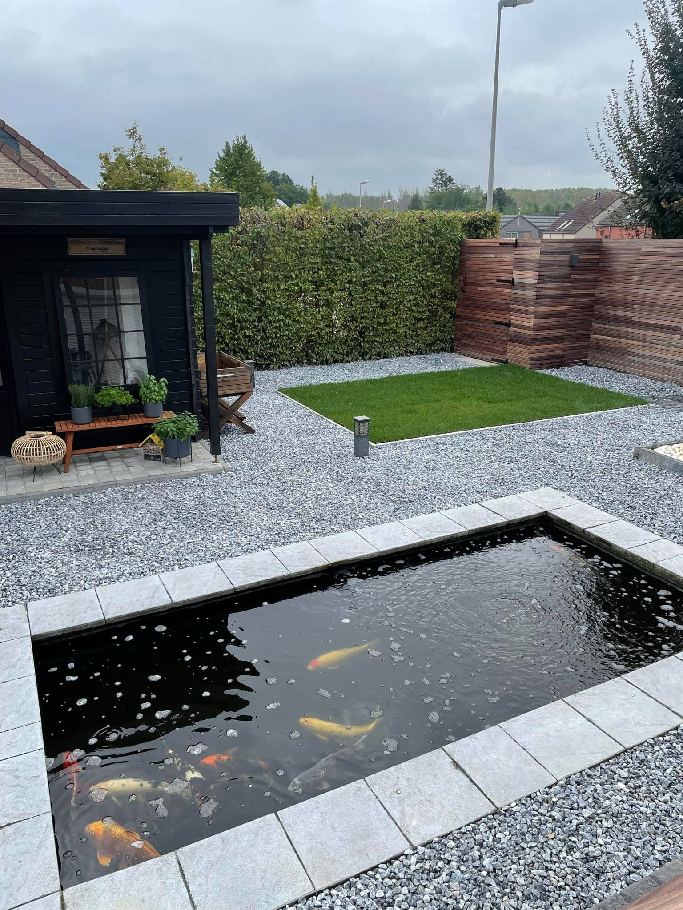
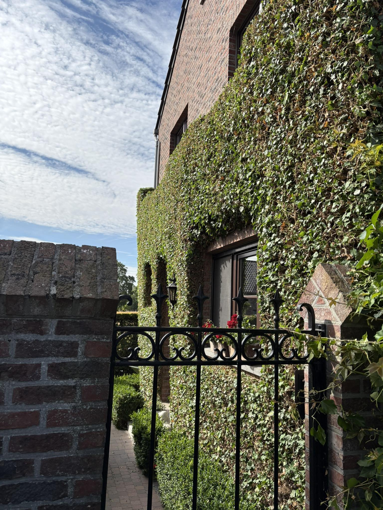
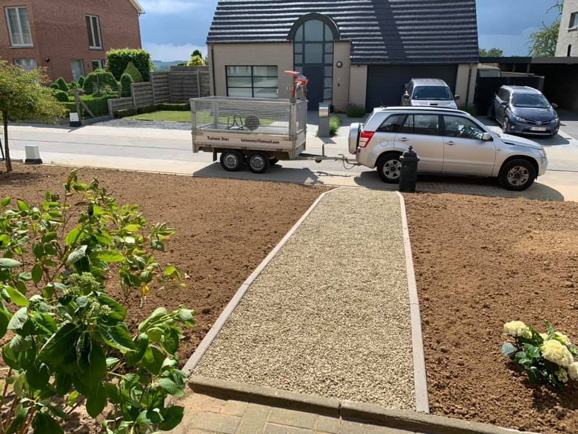
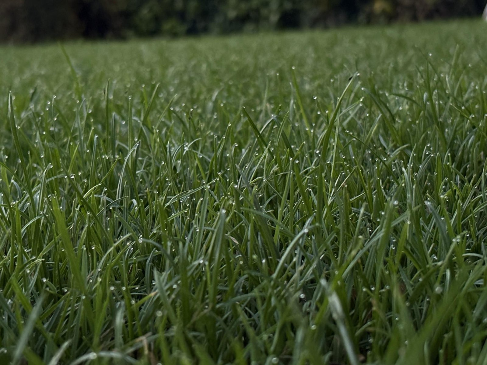

Aanleg
Uw tuin opnieuw aangelegd
Terrassen, paden, borders, vijvers en gazon. Van plan tot laatste plant.
Aanleg, onderhoud en snoeiwerk door één vakman die uw tuin kent. Netjes afgewerkt, het hele jaar door.

Vijf diensten, één aanspreekpunt. U belt Andrija, en Andrija komt ook zelf.
Terrassen, paden, borders, vijvers en gazon. Van plan tot laatste plant.
Hagen, struiken en bomen, strak en gezond.
Aanleg, herstel en maaien.
Borders die elk seizoen kleur geven.
Vaste rondes, zodat het altijd netjes ligt.



Bij Tuinwerken Stas werkt u met Andrija zelf. Hij komt kijken, maakt een voorstel en voert het werk ook uit. Komt hij terug voor het onderhoud, dan weet hij al hoe uw tuin in elkaar zit.
“Mijn doel is simpel: van uw tuin een plek maken waar u elke dag van kan genieten.”Andrija Stas, oprichter
Andrija komt ter plaatse kijken en luistert wat u wilt.
U krijgt een duidelijke offerte, zonder verrassingen achteraf.
Het werk wordt netjes uitgevoerd en afgewerkt.
Wilt u het zo houden? Dan komt hij op vaste rondes terug.
Vertel kort wat u in gedachten heeft. Andrija neemt contact op om langs te komen.
Een paar vragen volstaan. Foto's van uw tuin helpen om meteen een idee te geven.
Ja. Andrija komt ter plaatse om te zien wat er nodig is, en daarna krijgt u een offerte.
Zeker. Met vaste rondes blijft uw tuin het hele jaar netjes.
Tuinwerken Stas werkt in Tongeren en de omliggende gemeenten. Twijfelt u, vraag het gerust.
Ja, ook kleinere klussen zoals snoeiwerk of het gazon zijn welkom.